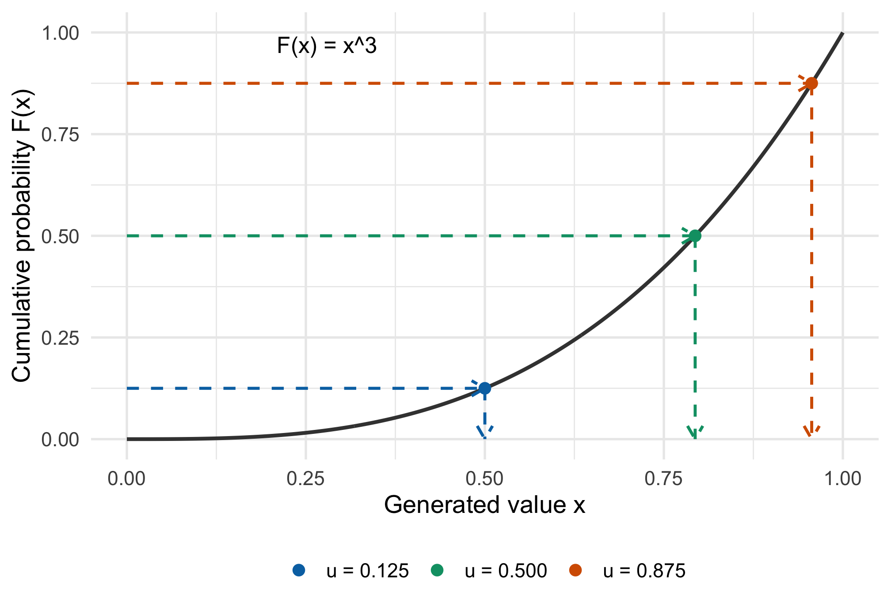
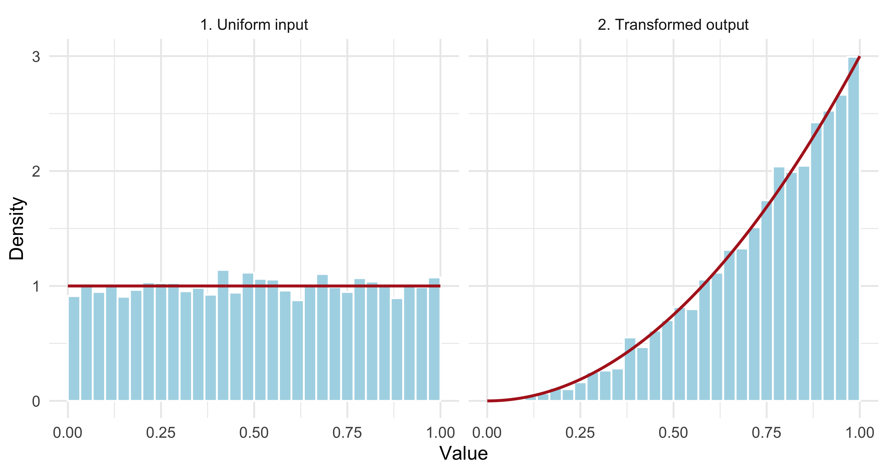
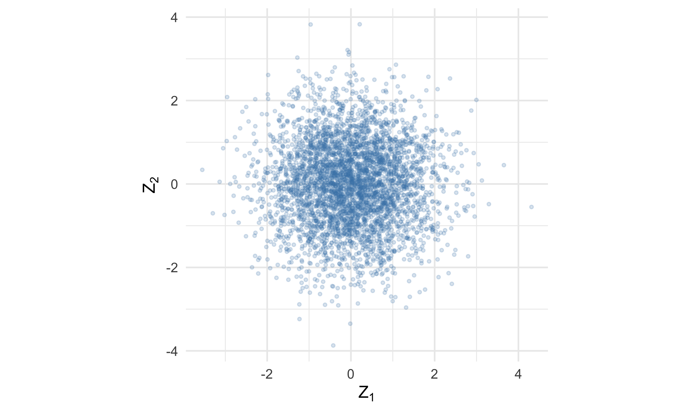
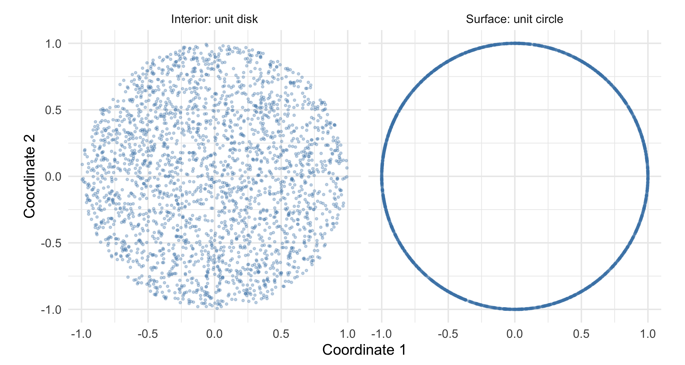
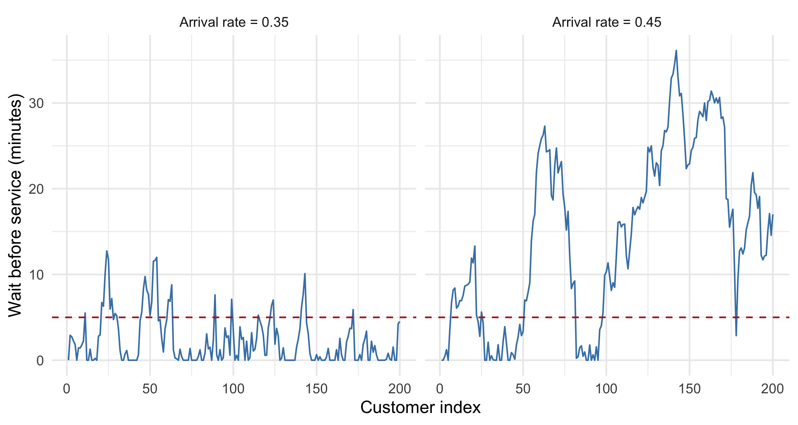

In the previous chapter, we used computation to estimate parameters from data. Here we go in the other direction: given a probability model, how do we generate observations from it?
We start with uniform random numbers, use them to construct one-dimensional distributions, and then build mixtures and random vectors. At each step, we ask the same three questions: What is the construction? Why does it have the desired distribution? How can we check it?
4.1 Overview
Generating random variables is the first step in a simulation study. Once we can generate data with a known truth, we can study an estimator’s bias, a confidence interval’s coverage, or a test’s power.
The main methods in this chapter follow a common pattern:
Available building block
Construction
Target
Uniform probability levels
Apply a quantile function
A specified univariate distribution
An easy proposal distribution
Accept or reject proposals
A distribution with a known density
Familiar independent variables
Transform or combine them
Related distributions, sums, and mixtures
Independent standard normals
Apply a matrix or normalize lengths
Correlated vectors and random directions
We develop these constructions first. The final optional applications use them in complete statistical experiments.
A pseudorandom number generator produces a deterministic sequence from an initial state. A well-designed generator makes that sequence useful as an approximation to independent random draws. In the mathematical arguments below, we work with ideal independent uniforms; software approximates them with finite precision.
NoteReproducibility
In R, use set.seed() to reproduce an example. The same seed, generator settings, software environment, and sequence of calls reproduce the same simulation. The seed identifies a computation; it does not certify the probability model.
Set the seed before a simulation experiment, then let the generator advance. Resetting the same seed inside every replication creates repeated copies of the same random input.
For a reproducible analysis, also record RNGkind() and sessionInfo(). For parallel work, use a framework that manages separate random-number streams, such as the streams supported by R’s parallel package. See the R documentation on random-number generation.
Sampling with replacement allows an observation to appear more than once. Sampling without replacement makes later draws depend on which observations have already been selected.
The empirical distribution places probability \(1/n\) on each of the \(n\) observed records, counting repeated values separately. Drawing \(n\) times independently from this distribution is the basic nonparametric bootstrap resampling step. Sampling all \(n\) records without replacement only permutes them, so the sample mean cannot change.
This is our first example of an important principle: the sampling rule is part of the statistical model.
NoteR Distribution Functions: A Reference
R uses four related prefixes. For example, dnorm() evaluates a normal density, pnorm() evaluates its CDF, qnorm() evaluates its quantile function, and rnorm() generates draws.
rnorm(n, sd = 4) has variance \(16\). An exponential rate of \(4\) gives mean \(1/4\). In the gamma family, scale = 1 / rate. A lognormal meanlog is the mean of \(\log X\), not the mean of \(X\).
A generator can run without errors while representing the wrong model if its parameterization is misunderstood.
4.2 Inverse Transformation Method
Imagine dividing the interval \((0,1)\) into probability levels. A uniform draw selects a level without favoring one part of that interval. The quantile function converts that probability level into a value on the scale of the target distribution.
It is the first value of \(x\) at which accumulated probability reaches the level \(u\).
If \(U\sim\operatorname{Unif}(0,1)\), then \(X=F^{-1}(U)\) has CDF \(F\). Independent uniforms transformed separately give independent observations from \(F\).
The condition is \(F(x)\geq u\), not \(F(x)=u\). A discrete CDF jumps over some probability levels. The generalized inverse still assigns every \(0<u<1\) to an outcome.
If \(X\) has a continuous CDF \(F\), then \(F(X)\sim\operatorname{Unif}(0,1)\). This is the reverse direction of the inverse-transform construction.
NoteA Connection to Model Checking
Under a correctly specified continuous predictive distribution, transformed observations have a uniform marginal distribution. Dependence must be checked separately. If \(F\) is estimated from the same observations, formal tests need to account for that estimation.
For discrete \(X\), \(F(X)\) is not uniform. An optional randomized version spreads each probability mass over its corresponding interval:
\[
U=F(X^-)+V\{F(X)-F(X^-)\},
\]
where \(V\) is an independent uniform and \(F(X^-)\) is the CDF just below \(X\).
Obtain the quantile function \(F^{-1}\) analytically or numerically.
Within the support, \(F(x)=x^3\), so \(F^{-1}(u)=u^{1/3}\). Therefore,
\[
X=U^{1/3}.
\]
Why do the observations concentrate near 1? Equal-width intervals near 1 contain more probability because the CDF rises faster there. The inverse maps more uniform probability levels into those intervals.
The arrows in Figure 4.1 show what the inverse does: choose a height \(u\), move across to the CDF, then read the corresponding \(x\) on the horizontal axis.
Code
quantile_paths <-data.frame(u =c(0.125, 0.5, 0.875),level =factor(c("u = 0.125", "u = 0.500", "u = 0.875")))quantile_paths$x <- quantile_paths$u^(1/3)quantile_grid <-data.frame(x =seq(0, 1, length.out =401))ggplot(quantile_grid, aes(x, x^3)) +geom_line(color ="grey25", linewidth =1) +geom_segment(data = quantile_paths, inherit.aes =FALSE,aes(x =0, xend = x, y = u, yend = u, color = level),linewidth =0.8, linetype ="dashed", show.legend =FALSE,arrow = grid::arrow(length = grid::unit(0.12, "inches")) ) +geom_segment(data = quantile_paths, inherit.aes =FALSE,aes(x = x, xend = x, y = u, yend =0, color = level),linewidth =0.8, linetype ="dashed", show.legend =FALSE,arrow = grid::arrow(length = grid::unit(0.12, "inches")) ) +geom_point(data = quantile_paths, inherit.aes =FALSE,aes(x, u, color = level), size =2.5 ) +annotate("text", x =0.28, y =0.97, label ="F(x) = x^3", size =4.5) +scale_color_manual(values =c("#0072B2", "#009E73", "#D55E00")) +scale_x_continuous(breaks =seq(0, 1, 0.25)) +scale_y_continuous(breaks =seq(0, 1, 0.25)) +coord_cartesian(xlim =c(0, 1), ylim =c(0, 1)) +labs(x ="Generated value x", y ="Cumulative probability F(x)", color =NULL) +theme(legend.position ="bottom")

Figure 4.1: The inverse CDF converts a probability level into an observation. Each horizontal arrow starts at u; the downward arrow lands at x = u^(1/3). The dashed guides are a construction, not additional random draws.
Code
set.seed(8672)n <-5000u <-runif(n)x_power <- u^(1/3)plot_data <-rbind(data.frame(value = u, distribution ="1. Uniform input"),data.frame(value = x_power, distribution ="2. Transformed output"))grid <-seq(0, 1, length.out =301)curve_data <-rbind(data.frame(value = grid, density =1,distribution ="1. Uniform input"),data.frame(value = grid, density =3* grid^2,distribution ="2. Transformed output"))ggplot(plot_data, aes(value)) +geom_histogram(aes(y =after_stat(density)), bins =30,boundary =0, fill ="lightblue", color ="white") +geom_line(data = curve_data, aes(y = density),color ="firebrick", linewidth =1) +facet_wrap(~ distribution) +labs(x ="Value", y ="Density")

Figure 4.2: Left: uniform probability levels. Right: mapping them through the quantile function produces values with the increasing target density.
Here \(\mathbb{E}(X)=3/4\) and \(\operatorname{Var}(X)=3/80\). A simulation provides an independent numerical check.
log1p(-u) computes \(\log(1-u)\) accurately when \(u\) is close to zero. This connects random-number generation to the numerical stability issues discussed earlier.
CautionEqual Distributions Do Not Mean Independent Draws
The formulas \(-\log(U)/\lambda\) and \(-\log(1-U)/\lambda\) have the same marginal distribution. Applying both to the same\(U\) produces dependent outputs. Use independent uniforms when independence is required.
NoteOptional Connection: Survival and Waiting Times
Exponential waiting times model the time between events in a homogeneous Poisson process. The constant rate is a substantive assumption: it implies a memoryless waiting time. Equipment aging or time-varying arrival rates may require a different distribution.
More generally, if a nonnegative event time has continuous cumulative hazard \(H(t)\) and survival function \(S(t)=e^{-H(t)}\) tending to zero, then
\[
T=H^{-1}\{-\log(U)\}.
\]
This turns survival-model simulation into an inversion problem. For example, the Weibull cumulative hazard \(H(t)=(t/b)^a\) gives \(T=b\{-\log(U)\}^{1/a}\).
If the exponential rate doubles, what happens to the average waiting time? Why would multiplying the simulated waiting times by two represent the opposite change?
An inverse may be inconvenient algebraically even when the CDF is easy to evaluate. For each \(u\), solve
The CDF is strictly increasing, so each \(u\in(0,1)\) has exactly one root in \((0,1)\). We can use the bracketing methods from the optimization chapter.
Code
custom_cdf <-function(x) (x + x^3) /2# used only on [0, 1]custom_quantile <-function(u) {vapply(u, function(ui) {uniroot(function(x) custom_cdf(x) - ui,interval =c(0, 1), tol =1e-10 )$root }, numeric(1))}set.seed(8676)u <-runif(2000)x_numeric <-custom_quantile(u)c(largest_cdf_residual =max(abs(custom_cdf(x_numeric) - u)),simulated_mean =mean(x_numeric),theoretical_mean =5/8)#> largest_cdf_residual simulated_mean theoretical_mean #> 4.819278e-11 6.213665e-01 6.250000e-01
There are two distinct errors: the root solver introduces numerical error, while finite simulation introduces Monte Carlo error. Tightening tol reduces the former; increasing the number of independent draws reduces the latter. Neither repairs a wrong CDF.
Suppose only values in \((a,b)\) are eligible for a study. If \(F\) is continuous and \(F(b)>F(a)\), then the conditional CDF within this interval is
Truncation changes which individuals enter the dataset. Censoring instead records incomplete information about some individuals who remain in the dataset, such as knowing that a failure time exceeds the study duration. These require different simulation rules. The direct CDF subtraction above is suitable for this moderate interval; extreme tails require numerically stable tail probabilities or a specialized truncated-distribution generator.
4.2.2 Discrete Distributions
For ordered support values \(x_1<x_2<\cdots\), the quantile rule selects the first value whose cumulative probability reaches \(u\):
Each outcome receives a subinterval of \((0,1)\) whose length equals its probability.
For \(X\sim\operatorname{Bernoulli}(p)\), the generalized inverse gives
\[
X=\mathbf{1}\{U>1-p\}.
\]
The threshold divides the unit interval into pieces of lengths \(1-p\) and \(p\).
The same idea applies to three categories with probabilities \(0.2\), \(0.5\), and \(0.3\). In Figure 4.3, interval length represents probability. A uniform draw at \(u=0.62\) selects the middle category because \(0.2<0.62\leq0.7\).
Figure 4.3: Discrete generation allocates the unit interval to outcomes. The middle category receives half of the interval, so it is selected with probability 0.5. Boundary points follow the generalized-inverse convention and have probability zero for an ideal continuous uniform.
Code
set.seed(8674)p <-0.4bernoulli <-as.integer(runif(10000) >1- p)labels <-c("Low", "Medium", "High")probabilities <-c(0.2, 0.5, 0.3)cutoffs <-cumsum(probabilities)u <-runif(10000)# First cutoff that reaches u: this also handles u at a cutoff.index <-vapply(u, function(ui) which(ui <= cutoffs)[1], integer(1))category <-factor(labels[index], levels = labels)mean(bernoulli)#> [1] 0.4008prop.table(table(category))#> category#> Low Medium High #> 0.1915 0.5056 0.3029# Built-in alternative for the same categorical distribution.head(sample(labels, size =10, replace =TRUE, prob = probabilities))#> [1] "High" "High" "High" "High" "Medium" "Low"
For the geometric distribution, use R’s convention: \(X\) counts failures before the first success. Then
\[
P(X=x)=p(1-p)^x,\qquad x=0,1,2,\ldots,
\]
and \(F(x)=1-(1-p)^{x+1}\). Solving \(F(x-1)<u\leq F(x)\) gives
The number of trials including the success is \(X+1\), with mean \(1/p\). Mixing up these conventions creates an off-by-one modeling error. See R’s geometric distribution documentation.
NoteOptional: Poisson Inversion
For a Poisson distribution, cumulative probabilities can be constructed from
Search for the first \(k\) satisfying \(F(k)\geq u\). This explains an inversion algorithm, but the recurrence can underflow for large \(\lambda\). In practice, use qpois(runif(n), lambda) or the specialized generator rpois(n, lambda). An r function need not implement the simple algorithm used in our derivation.
The inverse-transform method is especially convenient when a quantile is available. When a density is easier to work with than its CDF, the next method gives another route.
4.3 Acceptance-Rejection Method
Inverse transformation requires a usable quantile function. Acceptance-rejection requires a different resource: an easy proposal distribution that can cover the target.
Let \(f\) be the normalized target density and \(g\) a proposal density. We need a finite constant \(M\) such that
\[
f(y)\leq M g(y)
\]
everywhere on the target support. In particular, \(g(y)\) must be positive wherever \(f(y)>0\).
Repeat until the desired number of observations has been accepted:
The proposal visits some regions too frequently. The acceptance rule thins those visits by a location-specific amount. After thinning, the relative frequencies match the target.
For discrete distributions, use sums instead of integrals in the proof. The number of proposals through one acceptance is geometric on \(\{1,2,\ldots\}\) with mean \(M\). The realized cost varies from run to run.
This produces independent accepted draws, unlike a Markov chain method whose successive states are generally dependent.
For the \(\operatorname{Beta}(2,2)\) target,
\[
f(y)=6y(1-y),\qquad 0<y<1.
\]
With a uniform proposal, \(g(y)=1\). Since the maximum occurs at \(y=1/2\),
\[
M_{\min}=\max_{0<y<1}6y(1-y)=\frac{3}{2}.
\]
The resulting acceptance probability is \(2/3\). Choosing \(M=6\) is also valid, but accepts only \(1/6\) of proposals on average. A bound can be correct and unnecessarily expensive.
Figure 4.4: Uniform proposals form points under the envelope of height 1.5. Retaining only points below the target density produces Beta(2,2) draws along the horizontal axis.
The following implementation stops as soon as it has exactly \(n\) accepted observations. Counting all proposals makes its efficiency visible.
Code
rbeta22_rejection <-function(n, M =1.5) {stopifnot(length(n) ==1L, is.finite(n), n >=0, n ==floor(n),length(M) ==1L, is.finite(M), M >=1.5 ) draws <-numeric(n) n_accepted <-0L proposals <-0Lwhile (n_accepted < n) { y <-runif(1) u <-runif(1) proposals <- proposals +1Lif (u <=dbeta(y, 2, 2) / M) { n_accepted <- n_accepted +1L draws[n_accepted] <- y } }list(draws = draws, proposals = proposals)}set.seed(8679)beta_tight <-rbeta22_rejection(2000, M =1.5)beta_loose <-rbeta22_rejection(2000, M =6)knitr::kable(data.frame(M =c(1.5, 6),proposals =c(beta_tight$proposals, beta_loose$proposals),expected_proposals =2000*c(1.5, 6),observed_acceptance =2000/c(beta_tight$proposals, beta_loose$proposals),theoretical_acceptance =1/c(1.5, 6)), digits =3, col.names =c("M", "Proposals", "Expected proposals", "Observed rate", "Target rate"))
M
Proposals
Expected proposals
Observed rate
Target rate
1.5
2910
3000
0.687
0.667
6.0
12628
12000
0.158
0.167
Each proposal here uses two uniforms, one for \(Y\) and one for the decision. Thus \(n=2000\) with \(M=1.5\) uses \(3000\) proposals and \(6000\) uniform draws in expectation. For another proposal generator, its internal random-number cost could differ.
What goes wrong if we choose \(M=1\) and simply replace acceptance probabilities above one by one? Why does a histogram that looks plausible fail to justify this shortcut?
CautionA Bound Must Hold Everywhere
The envelope condition would fail near the mode. Capping the ratio changes the accepted density to one proportional to \(\min\{g(y),f(y)/M\}\), which generally is not \(f\).
If we can establish \(h(x)\leq Cg(x)\) everywhere, we may accept with probability \(h(Y)/\{Cg(Y)\}\) without knowing \(Z\). The acceptance rate is then \(Z/C\), not \(1/C\).
This is useful for some posterior distributions, where the normalizing constant is difficult to compute. The challenge remains finding an easy proposal and a valid global bound.
NoteConnections and Limitations
Connection to optimization. Finding the smallest bound involves maximizing \(f/g\), or its logarithm. A numerical optimizer or a finite grid may help explore this ratio, but does not by itself prove a global bound, especially on unbounded support.
Connection to importance sampling. Both methods use a proposal \(g\) and the ratio \(f/g\). Rejection sampling discards proposals to obtain draws from the target; importance sampling keeps proposals and weights their contributions when estimating an expectation.
Computational limitation. In high dimensions, a proposal that misses the target’s concentration or dependence can yield a very small acceptance rate. This helps motivate more specialized methods, including the Markov chain Monte Carlo methods encountered in other statistics courses.
4.4 Using Probability Distribution Theory
Known distributional relationships are also simulation algorithms. They often reveal why a distribution appears in statistical inference.
If \(U_1,U_2\) are independent uniforms, define
\[
R=\sqrt{-2\log U_1},\qquad \Theta=2\pi U_2,
\]
and
\[
Z_1=R\cos\Theta,\qquad Z_2=R\sin\Theta.
\]
Then \(Z_1\) and \(Z_2\) are independent standard normal variables.
NoteRadius and Direction
A bivariate standard normal has circularly symmetric density. Its direction is uniform, and its squared radius has a \(\chi^2_2\) distribution, equivalently an exponential distribution with rate \(1/2\). Box-Muller generates that radius and direction, then converts polar coordinates to Cartesian coordinates. The polar Jacobian contributes a factor \(r\), giving the radial density \(r e^{-r^2/2}\).
Code
set.seed(8680)n <-4000radius <-sqrt(-2*log(runif(n)))angle <-2* pi *runif(n)z1 <- radius *cos(angle)z2 <- radius *sin(angle)ggplot(data.frame(z1, z2), aes(z1, z2)) +geom_point(alpha =0.2, color ="steelblue", size =1) +coord_equal() +labs(x =expression(Z[1]), y =expression(Z[2]))

Figure 4.5: Box-Muller creates a circular normal cloud from two independent uniforms. The two normal coordinates are independent even though their formulas share a radius and angle.
CautionIndependence Comes from the Joint Distribution
Shared ingredients do not automatically imply dependence, and an approximately zero sample correlation does not prove independence. Here independence follows from the joint density. For routine work, use rnorm(); this construction explains one way a normal generator can work.
If \(Z_1,\ldots,Z_k\) are independent \(N(0,1)\) variables,
\[
V=\sum_{j=1}^k Z_j^2\sim\chi^2_k.
\]
If \(Z\sim N(0,1)\) is independent of \(V\sim\chi^2_\nu\), then
\[
T=\frac{Z}{\sqrt{V/\nu}}\sim t_\nu.
\]
If \(V_1\sim\chi^2_{d_1}\) and \(V_2\sim\chi^2_{d_2}\) are independent, then
\[
\frac{V_1/d_1}{V_2/d_2}\sim F_{d_1,d_2}.
\]
NoteWhy a t Statistic Has Heavier Tails
A \(t\) statistic divides a standardized normal estimation error by an estimated scale. When the scale estimate is unusually small, the ratio can be large. This explains the heavier tails of the \(t\) distribution and the larger critical values used when estimating an unknown normal variance.
Figure 4.6: A random denominator creates heavier tails. The generated ratios agree with the t distribution with 5 degrees of freedom; the dashed normal density has lighter tails.
CautionGenerate the Numerator and Denominator Independently
The numerator and denominator must be generated independently. Reusing the same normals in both changes the distribution. In this example, \(\operatorname{Var}(T)=\nu/(\nu-2)=5/3\), so the raw \(t_5\) distribution also has greater variance than \(N(0,1)\).
If \(G_1\sim\operatorname{Gamma}(a,\lambda)\) and \(G_2\sim\operatorname{Gamma}(b,\lambda)\) are independent with the same rate, then
The ratio is a random share of a positive total. This gives intuition for beta models of probabilities and proportions. The common rate cancels from the ratio.
Figure 4.7: A quantile comparison checks the entire distribution of the gamma ratio against Beta(3,2), including its tails.
NoteConnection to Dirichlet Distributions
Normalizing several independent gammas with a common rate similarly produces a Dirichlet random vector. Its components sum to one, making it useful for uncertain category probabilities and mixture weights.
These identities construct new variables from familiar ones. We next distinguish two ways of combining distributions: adding contributions and selecting a population.
4.5 Sums and Mixtures
4.5.1 Sums and Convolution
A sum combines contributions from all its terms:
\[
S=X_1+\cdots+X_k.
\]
For independent continuous variables, the density of \(X_1+X_2\) is
\[
f_S(s)=\int f_{X_1}(x)f_{X_2}(s-x)\,dx.
\]
The integral is a convolution. Simulation avoids computing this integral: generate the terms jointly according to the model and add them.
Under the independence conditions below:
A sum of independent \(\chi^2\) variables is chi-square with the sum of the degrees of freedom.
A sum of \(k\) independent \(\operatorname{Exp}(\lambda)\) variables is \(\operatorname{Gamma}(k,\lambda)\).
A sum of \(k\) independent geometric failure counts with success probability \(p\) is negative binomial with size = k and prob = p.
NoteWhat a Sum Represents
A total processing time adds durations from all stages. A count of failures before the \(k\)th success adds the failures before each successive success. The sum corresponds to an actual mechanism, not just an algebraic identity.
Figure 4.8: Adding two observations, averaging them, and selecting one population produce different distributions. The solid curves show their respective theoretical densities.
If component \(j\) has mean \(\mu_j\) and variance \(\sigma_j^2\), then
This decomposition explains why unobserved heterogeneity can inflate variability. A mixture of distinct normal components is generally nonnormal, but it need not be bimodal. Identical components yield the original normal distribution.
Connection to clustering and EM. Simulation starts with the label and then generates the observation. In mixture-model estimation, we see the observation and infer uncertainty about its label. This reversal is the basis for the responsibility calculations in the EM algorithm.
In the example above, the weighted average and the mixture both have mean 2. Why would checking only the sample mean fail to detect the wrong generator?
A mixture label need not take only finitely many values. Consider
Customers, neighborhoods, or machines can have different event rates. Even when each unit follows a Poisson model conditional on its rate, the pooled counts may have variance greater than their mean. This is one reason negative binomial regression is useful.
CautionShared Latent Variables Create Dependence
We drew one independent rate for each count. If several observations share a single group-specific rate, they become dependent after that rate is integrated out. Where we place a draw in the simulation loop determines which observations share uncertainty.
The same generative logic extends to random vectors. The additional task is to reproduce how their coordinates vary together.
4.6 Generating Multivariate Random Variables
4.6.1 Multivariate Normal Distribution
Suppose two measurements each have a standard normal marginal distribution. We still need to specify how they move together. Independent rnorm() calls impose independence; they cannot represent a positive correlation merely because the marginal histograms look correct.
For a normal vector, the covariance matrix supplies this information:
The normality follows because every linear combination of \(\boldsymbol X\) is a linear combination of independent normals.
CautionMatch the Matrix Factor to the Row Convention
R’s chol(Sigma) returns an upper triangular matrix \(R\) satisfying
\[
R^\top R=\boldsymbol\Sigma.
\]
If simulated observations are rows of an \(n\times d\) matrix \(Z\), use
\[
X=ZR+\boldsymbol1_n\boldsymbol\mu^\top.
\]
For a column vector, the corresponding factor is \(A=R^\top\). Mixing up these orientations generally produces the wrong covariance. See the R documentation for chol().
The construction has a geometric interpretation. In Figure 4.9, the same points start in a circular cloud, become an ellipse after multiplication by the matrix factor, and then move to the desired mean. Color tracks each point’s original first coordinate.
Figure 4.9: A matrix factor introduces scale and dependence; adding the mean shifts location. The black curves are corresponding 95% normal probability contours. All three panels use the same underlying draws and the same axis scale.
Code
rmvn_chol <-function(n, mu, Sigma) { d <-length(mu)stopifnot(length(n) ==1L, is.finite(n), n >=0, n ==floor(n), d >0L, all(is.finite(mu)),is.matrix(Sigma), all(dim(Sigma) ==c(d, d)),all(is.finite(Sigma)), isSymmetric(Sigma) ) R <-chol(Sigma) # requires positive definiteness here Z <-matrix(rnorm(n * d), nrow = n, ncol = d)sweep(Z %*% R, MARGIN =2, STATS = mu, FUN ="+")}set.seed(8685)mu <-c(1, 2)Sigma <-matrix(c(1, 0.8, 0.8, 2), nrow =2)mvn_draws <-rmvn_chol(10000, mu, Sigma)colMeans(mvn_draws)#> [1] 1.005665 2.013197cov(mvn_draws)#> [,1] [,2]#> [1,] 1.0025949 0.7703105#> [2,] 0.7703105 1.9799767Sigma#> [,1] [,2]#> [1,] 1.0 0.8#> [2,] 0.8 2.0
The function also returns an \(n\times d\) matrix for \(n=0\) or \(n=1\). This matters when a component in a simulated mixture receives few or no observations.
NoteEigenvalues, PCA, and Reusing the Factorization
The eigenvectors specify directions, and the square roots of the eigenvalues specify how much to stretch a standard normal cloud in those directions.
This connects generation to principal component analysis. PCA identifies directions of variation in observed data; simulation constructs that variation from independent coordinates.
A covariance matrix can be positive semidefinite with some eigenvalues equal to zero. The normal vector then lies in a lower-dimensional subspace. Ordinary unpivoted Cholesky may fail, whereas an eigenvalue construction can handle that case. Tiny negative eigenvalues caused by roundoff may be set to zero after a tolerance check; substantial negative eigenvalues indicate an invalid covariance matrix and should not be silently removed.
If \(\boldsymbol\Sigma\) stays fixed across many simulation batches, compute its factor once and reuse it. Factorization costs roughly order \(d^3\), while multiplying \(n\) observations by a dense factor costs order \(nd^2\). Avoid repeating work that does not change the model.
Consider two standardized laboratory measurements with unit marginal variances. We compare independence with correlation \(\rho=0.8\) while keeping the marginals the same.
Figure 4.10: The marginal distributions are the same in both panels. Positive correlation puts more probability in the upper-right region where both measurements exceed 1.
(1-pnorm(1))^2# exact probability under independence#> [1] 0.02517149
The simulated joint probability rises from approximately 0.025 to 0.099 under these two models. The Monte Carlo standard error (MCSE) measures simulation noise; we derive it below.
The same issue arises with simultaneous equipment failures, correlated regression errors, and repeated measurements. A study of a joint event must preserve the relevant dependence.
If \(\boldsymbol X_1,\ldots,\boldsymbol X_m\) are independent \(N_d(\boldsymbol0,\boldsymbol\Sigma)\) vectors, then
NoteOptional Connection: Uncertainty in a Sample Covariance
With observations stored in rows, this is simply crossprod(X). For a normal sample of size \(n\) with an estimated mean, its usual sample covariance satisfies
Between-group differences can create marginal association even if variables are independent within every group. This is useful when designing simulation studies for clustering or confounding.
4.6.3 Uniform Directions and Points in a Ball
Let \(\boldsymbol Z\sim N_d(\boldsymbol0,I_d)\). Its distribution is unchanged by rotations, so it has no preferred direction. Consequently,
is uniform on the surface of the unit sphere in \(\mathbb R^d\). The zero vector has probability zero under the ideal normal model.
Uniform direction alone puts every point at distance 1. To fill the ball uniformly in volume, independently generate a radius \(R\) satisfying
\[
P(R\leq r)=r^d,\quad 0\leq r\leq1.
\]
This follows because a ball of radius \(r\) has \(r^d\) times the volume of the unit ball. Therefore,
\[
R=V^{1/d},\qquad \boldsymbol X=R\boldsymbol U,
\]
where \(V\) is uniform and independent of the direction.
Code
runif_sphere <-function(n, d) {stopifnot(length(n) ==1L, is.finite(n), n >=0, n ==floor(n),length(d) ==1L, is.finite(d), d >=1, d ==floor(d) ) Z <-matrix(rnorm(n * d), nrow = n, ncol = d) lengths <-sqrt(rowSums(Z^2))sweep(Z, MARGIN =1, STATS = lengths, FUN ="/")}
We divide each row by its length directly. Constructing an \(n\times n\) diagonal matrix of inverse lengths would waste memory.
Code
set.seed(8689)n <-2500directions <-runif_sphere(n, d =2)disk <-sweep(directions, 1, sqrt(runif(n)), FUN ="*")sphere_plot <-rbind(data.frame(x = directions[, 1], y = directions[, 2],region ="Surface: unit circle"),data.frame(x = disk[, 1], y = disk[, 2],region ="Interior: unit disk"))ggplot(sphere_plot, aes(x, y)) +geom_point(alpha =0.3, size =0.7, color ="steelblue") +facet_wrap(~ region) +coord_equal() +labs(x ="Coordinate 1", y ="Coordinate 2")

Figure 4.12: In two dimensions, normalized normals lie on the circle. Multiplying by an independent square-root-uniform radius fills the disk uniformly in area.
NoteGeometry in High Dimensions
Random directions appear in rotationally invariant perturbations, geometric Monte Carlo methods, and randomized algorithms. In high dimensions, a uniform point in a ball is typically close to its boundary: \(P(R\leq0.9)=0.9^d\). At \(d=100\), this probability is about \(0.000027\).
Why does a uniform radius on \((0,1)\) place too much mass near the center of a disk? Why does choosing a uniform latitude fail to generate uniform points on the surface of a three-dimensional sphere?
4.7 Checking a Generator
A mathematical construction tells us the target law. Numerical checks then help detect programming errors and quantify how much disagreement to expect from a finite sample.
A histogram is a useful first view, but its appearance depends on bin width and sample size. Different distributions can have the same mean, variance, or a similar-looking central region.
A convincing validation combines theory with checks that target different possible mistakes:
Figure 4.13: The empirical CDF of accepted proposals tracks the Beta(2,2) CDF. Sampling variation creates small discrepancies even for a correct generator.
Formal goodness-of-fit tests can supplement these checks, but passing a test is not a proof of correctness. A correct generator can occasionally be rejected, and a small sample may fail to detect a faulty one. The algorithm’s mathematical justification remains essential.
NoteMonte Carlo Standard Error
Suppose we estimate \(p=P(X>c)\) using \(B\) independent simulated observations:
These limits quantify numerical uncertainty from the finite simulation. They do not quantify uncertainty about whether the exponential model or its rate describes a real population.
To halve MCSE, we generally need about four times as many independent replications. For rare events, zero simulated occurrences do not imply zero probability: the plug-in MCSE also becomes zero and is misleading. A binomial interval or a method designed for rare events is then more informative.
NoteThree Different Sources of Uncertainty
Sampling uncertainty concerns what would happen with another real dataset. Monte Carlo uncertainty comes from using finitely many simulated replications to study that behavior. Model uncertainty concerns whether the assumed mechanism is an adequate description of the setting.
More simulation reduces Monte Carlo uncertainty. It does not automatically reduce the other two.
NoteChoosing a Generation Method
Available structure
Natural approach
Main issue to check
A reliable built-in generator
Use the distribution’s r function
Parameterization and joint assumptions
A tractable quantile
Inverse transformation
Correct generalized inverse and endpoints
A tractable CDF without a convenient inverse
Numerical root finding
Bracketing, monotonicity, tolerance, and cost
A target density and a suitable proposal
Acceptance-rejection
Global envelope and acceptance rate
A known distributional identity
Transform simpler independent variables
Conditions such as independence and common rates
A latent-class or hierarchical model
Generate latent variables, then observations
Which observations share each latent draw
A normal covariance structure
Matrix factorization
Positive definiteness and factor orientation
Rotational or volume symmetry
Geometric construction
Surface versus volume and the correct radius
Methods are often combined. A hierarchical model may use inverse transformation for event times, normal matrix factors for random effects, and conditional Bernoulli draws for outcomes.
The goal is a generator that is statistically correct, numerically reliable, and efficient enough for the problem. A sophisticated algorithm cannot compensate for an incorrect data-generating mechanism.
NoteThe Main Ideas to Keep
A probability model becomes operational when we can generate data from it.
Uniform draws can be transformed into observations through a generalized inverse CDF.
Rejection sampling reshapes an easy proposal; a valid, tight envelope controls efficiency.
Distributional identities connect simulation to the foundations of statistical inference.
A mixture selects a component; a sum combines contributions from all components.
Hierarchical draws specify both marginal variation and dependence.
Multivariate generation must reproduce covariance and joint behavior, not only marginal histograms.
Validation combines mathematical reasoning, numerical checks, and distributional diagnostics.
More independent replications reduce Monte Carlo error; they do not correct a wrong model.
The next step is to use these generators to approximate expectations, integrals, and sampling distributions. That is the central task of Monte Carlo simulation.
4.8 Optional: Real-World Applications
The core chapter is complete. The following optional examples show how to combine the generators in full statistical analyses. Their assumptions and parameters are illustrative. They can be used for additional class discussion or independent study.
Suppose an experiment compares two independent groups, each with \(n\) observations:
Here \(\delta\) is a meaningful difference we want to detect. To keep the benchmark exact, assume \(\sigma=1\) is known. The two-sided level-\(0.05\) test rejects when
For \(\delta=0\), the rejection probability is the Type I error rate. For \(\delta\neq0\), it is power.
We generate whole datasets, apply the proposed analysis to each dataset, and record the result. The data size \(n\) determines how informative each experiment is. The number of replications \(B\) determines how accurately we estimate its rejection probability.
Code
set.seed(8691)B <-4000sigma <-1design <-expand.grid(n =c(10, 20, 40, 80), delta =c(0, 0.5))critical <-qnorm(0.975)power_results <-do.call(rbind, lapply(seq_len(nrow(design)), function(i) { n <- design$n[i] delta <- design$delta[i] control <-matrix(rnorm(B * n, 0, sigma), nrow = B) treatment <-matrix(rnorm(B * n, delta, sigma), nrow = B) se <- sigma *sqrt(2/ n) statistic <- (rowMeans(treatment) -rowMeans(control)) / se estimated <-mean(abs(statistic) > critical) shift <- delta / se exact <-pnorm(-critical - shift) +pnorm(critical - shift, lower.tail =FALSE)data.frame(n = n, delta = delta, estimated = estimated, exact = exact,MCSE =sqrt(estimated * (1- estimated) / B) )}))power_results$scenario <-ifelse( power_results$delta ==0, "Null: Type I error", "Effect 0.5: power")knitr::kable(power_results[, c("n", "delta", "estimated", "exact", "MCSE")],digits =4)
Figure 4.14: Points are simulated rejection rates with approximate 95% Monte Carlo error bars. Lines are exact normal-model probabilities. Increasing the experiment’s sample size increases power, while the Type I error remains near 0.05.
NoteInterpretation and Assumptions
The exact formula gives a benchmark for our simulation. When the model becomes more realistic, such as unequal variances, clustered observations, or missing outcomes, simulation may remain feasible even when a simple power formula does not.
If \(\sigma\) is estimated, replace the known-variance test with the actual planned procedure, such as a two-sample \(t\) test. Simulating one analysis and reporting power for another answers the wrong question.
Suppose a process produces independent binary defect indicators conditional on an unknown defect probability \(p\). Start with a \(\operatorname{Beta}(1,1)\) prior and observe 3 defects among 18 items. Beta-binomial conjugacy gives
Figure 4.15: The posterior predictive distribution spreads probability over a wider range of defect counts. The plug-in model ignores uncertainty about the process rate. Lines show exact probabilities and bars show simulated proportions.
NoteInterpretation and Shared Uncertainty
A decision triggered by a large defect count depends on the predictive tail, not just the expected count. Hierarchical simulation carries parameter uncertainty through to that tail.
If we drew a fresh independent \(p\) for each individual item instead of one shared \(p\) for the batch, the marginal total would be binomial with probability \(\mathbb{E}(p)\). That would represent a different mechanism and lose the shared uncertainty in this posterior prediction.
Consider a single server, first-come-first-served, initially idle. Let interarrival times be independent exponentials with rate \(\lambda\), and service times be independent \(\operatorname{Gamma}(2,1)\) variables, with mean 2 minutes. Assume the arrival and service processes are independent.
If \(A_i\) is the time between customers \(i-1\) and \(i\), \(S_i\) is customer \(i\)’s service time, and \(W_i\) is the wait before service, then
This recursion turns independent primitive random inputs into dependent waiting times. A long service can delay several later customers.
We compare arrival rates \(0.35\) and \(0.45\) per minute. Their utilization values are \(\lambda\mathbb{E}(S)=0.7\) and \(0.9\). Both are below one, but the system closer to capacity has less room to absorb bursts.
set.seed(8694)queue_paths <-do.call(rbind, lapply(rates, function(rate) {data.frame(customer =1:200, wait =simulate_queue(rate),scenario =paste("Arrival rate =", rate) )}))ggplot(queue_paths, aes(customer, wait)) +geom_line(color ="steelblue", linewidth =0.6) +geom_hline(yintercept =5, linetype ="dashed", color ="firebrick") +facet_wrap(~ scenario) +labs(x ="Customer index", y ="Wait before service (minutes)")

Figure 4.16: Two illustrative paths show how delays carry over between customers. Estimates in the table average 800 independent runs per scenario; one path alone can be misleading.
NoteInterpretation and Assumptions
The estimand is the expected fraction of the first 200 customers who wait more than five minutes in a system starting empty. It is not automatically the long-run stationary probability. Studying steady-state performance requires addressing the initial transient and dependence.
We compute MCSE from independent run-level fractions. Pooling all customers and treating their wait indicators as independent Bernoulli trials would ignore the dependence created by the queue.
This example combines distribution choice, recursive computation, and statistical reasoning about the unit of replication.
Exercises
Derive an inverse-transform generator for \(f(x)=4x^3\) on \((0,1)\). Check its theoretical mean and one tail probability.
Generate 500 observations from an exponential distribution with mean 5. Explain the difference between rate = 5 and rate = 1 / 5.
Why does the generalized inverse use \(F(x)\geq u\)? Illustrate your answer with a Bernoulli distribution.
For a \(\operatorname{Beta}(3,1)\) target and a uniform proposal, find the smallest valid rejection bound \(M\), the acceptance probability, and the expected number of proposals for 1000 accepted draws.
Derive the acceptance probability when the target is known only through an unnormalized density. Which constant need not be computed?
Generate a \(t_4\) variable from independent normal and chi-square variables. Explain why its variance is 2 rather than 1. How would you rescale it to unit variance?
Compare \(0.3X_1+0.7X_2\) with a mixture that selects \(X_1\) with probability \(0.3\). Derive both means and variances for independent \(X_1\sim N(0,1)\) and \(X_2\sim N(4,1)\).
For a fixed positive definite covariance matrix, compare Z %*% chol(Sigma) with Z %*% t(chol(Sigma)). Derive the covariance produced by each.
In a mixture of bivariate normals, what changes if you draw one component label per coordinate instead of one per row?
Derive the radius distribution for a uniform point inside a three-dimensional ball. Verify it using the empirical distribution of simulated radii.
Extend the power experiment to unknown variance and a two-sample \(t\) test. Compare Type I error and power under normal errors and under rescaled \(t_3\) errors with the same variance.
Simulate repeated datasets and estimate the coverage of a 95% confidence interval for an exponential mean. State the true mean, interval procedure, number of datasets, and MCSE of the coverage estimate.
In the defect prediction example, vary the posterior concentration \(a+b\) while holding \(a/(a+b)=0.2\). What happens to predictive variance, and why?
In the queue example, why is the number of independent runs relevant to the MCSE calculation? How would the target quantity change if you analyzed only later customers after a warm-up period?
For software details, consult the official R documentation linked at the relevant examples. Useful local help pages include ?RNGkind, ?Distributions, ?qgeom, ?chol, and ?rWishart. The course’s original reading is Rizzo, M. L. (2007), Statistical Computing with R, Chapman & Hall/CRC.